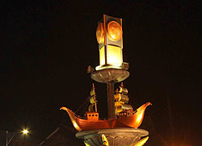

Sejarah
Tahun Saka 1336 ada orang Campa Banjarmlati berjumlah delapan keluarga yang pandai membuat gula tebu ketika ada di negaranya…”Orang-orang tadi pindah untuk membuat gula merah yang tidak dapat dipatahkan itu. Berangkatnya melalui lautan menuju arah barat hingga mendarat di sekitar sungai yang pinggir dan kanan kirinya tumbuh tak teratur pohon bakau. Kepindahannya itu dipimpin oleh kakek Pow Ie Din; setelah mendarat kemudian mengadakan doa dan semadi, kemudian dia mulai menebang pohon bakau tadi yang kemudian diteruskan oleh orang-orang lainnya. Tanah lapang itu kemudian di buat tegalan dan pekarangan serta perumahan yang selanjutnya menjadi perkampungan itu dinamakan kampung: KABONGAN; mengambil kata dari sebutan pohon bakau, menjadi Ka-bonga-an (Kabongan),…. Pada suatu hari saat fajar menyingsing di bulan Waisaka; orang-orang akan mulai ngrembang (mbabat,Ind: memangkas) tebu. Sebelum dimulai mbabat diadakan upacara suci Sembayang dan semadi di tempat tebu serumpun yang akan dikepras/dipangkas dua pohon, untuk tebu “Penganten”.Upacara pengeprasan itu dinamakan “ngRembang”, sampai dijadikan nama Kota Rembang hingga saat ini.